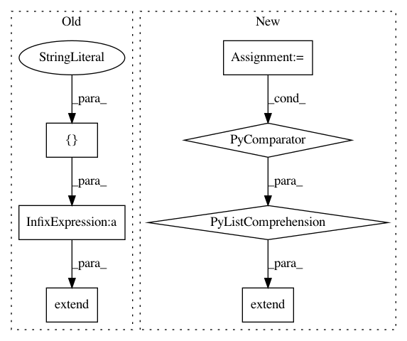

afad95fe907b4fee7f10ad7c330df2320d20e1bc,batchflow/utils.py,,print_results,#Any#Any#Any#Any#Any#Any#,209
Before Change
if average_repetitions:
columns.extend([name + "_mean", name + "_std"])
else:
columns.extend([name + "_" + str(i) for i in [*ndf["repetition"].unique(), "mean", "std"]])
for config, cdf in ndf.groupby("config"):
index.append(config)
cdf = cdf.drop(["config", "name"], axis=1).dropna(axis=1).astype("float")
if average_repetitions:
After Change
if average_repetitions:
columns.extend([attr + " (mean)", attr + " (std)"])
else:
repetition_cols = [" (exec {})".format(i) for i in ndf["repetition"].unique()]
columns.extend([attr + col_name for col_name in [*repetition_cols, " (mean)", " (std)"]])
for config, cdf in ndf.groupby("config"):
index.append(config)
cdf = cdf.drop(["config", "name"], axis=1).dropna(axis=1).astype("float")
if average_repetitions:
In pattern: SUPERPATTERN
Frequency: 3
Non-data size: 7
Instances
Project Name: analysiscenter/batchflow
Commit Name: afad95fe907b4fee7f10ad7c330df2320d20e1bc
Time: 2020-03-25
Author: dimonovez@gmail.com
File Name: batchflow/utils.py
Class Name:
Method Name: print_results
Project Name: merenlab/anvio
Commit Name: 83440abb477f24ea450aa5be06758dda2af50511
Time: 2020-04-01
Author: kiefl.evan@gmail.com
File Name: anvio/bamops.py
Class Name: Read
Method Name: __repr__
Project Name: merenlab/anvio
Commit Name: 0998f41967aa62a636a8abf4af6834bc48be5070
Time: 2020-02-26
Author: kiefl.evan@gmail.com
File Name: anvio/sequence.py
Class Name: Read
Method Name: __repr__